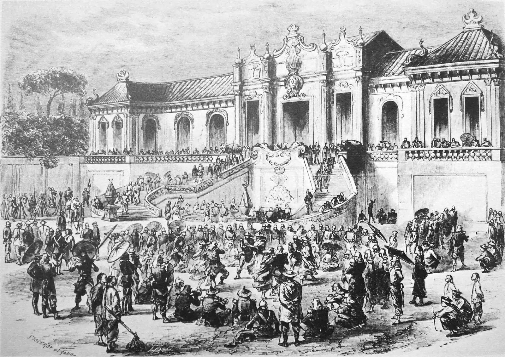
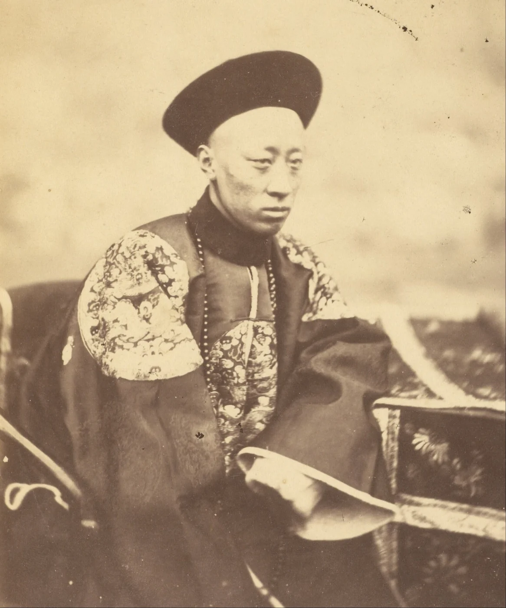
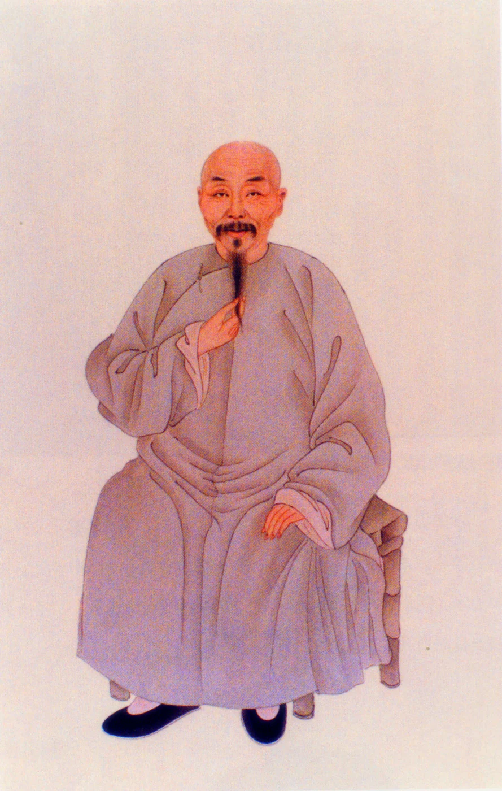
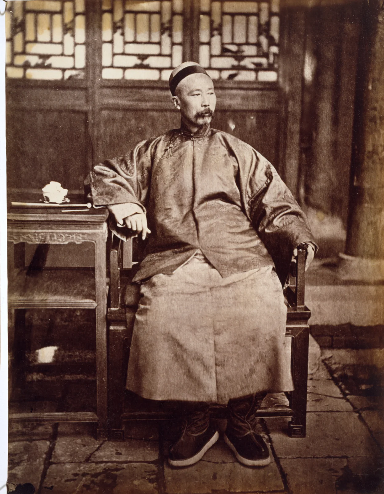
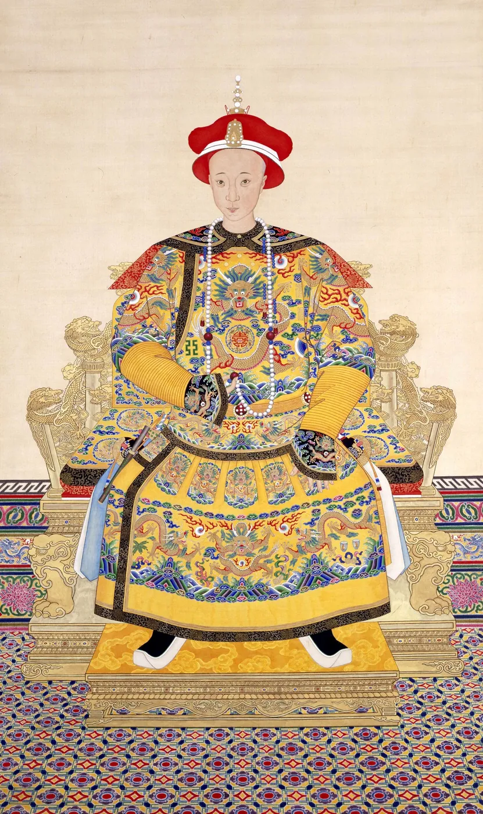
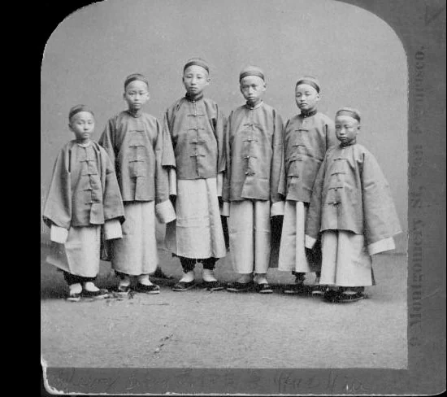

HIST 270 · History of China · Chapter 18 · Lecture 3 · Workshop opener
Learning from the Enemy
After 1860, Qing Reformers Tried to Make China Strong with Western Tools
Self-Strengthening (ziqiang), 1860–1895 · Open the workshop ↗

Q7 story · Beijing · October 1860
British and French Troops Looted and Burned the Emperor's Garden

Sources: Ebrey, ch. 18, pp. 321–322; the Ch. 18, Lecture 3 background essay.
Q7 story · The Conventions of Peking · 1860
Prince Gong Signed a Peace That Took More of China's Sovereignty

Sources: Ebrey, ch. 18, pp. 322, 325; the Ch. 18, Lecture 3 background essay.
Q8 story · Shanghai · 1861
A Refugee Scholar Asked Why Huge China Was So Weak

Why are Western nations small and yet strong? Why are we large and yet weak?Feng Guifen, 1861, quoted in Ebrey, p. 322
Sources: Ebrey, ch. 18, p. 322; Hummel, “Fêng Kuei-fên.”
The key term · Ziqiang · 1861
Officials Named Their Answer Ziqiang, “Self-Strengthening,” a Phrase from the Classics
Sources: Yijing, Qian hexagram, Image commentary; Chouban yiwu shimo, Xianfeng reign, juan 72; Feng, Jiaobinlu kangyi; Kuo and Liu, Cambridge History of China, vol. 10.
The key term · What it meant · 1860s–1898
Self-Strengthening Meant Western Tools to Defend a Confucian State
…take Chinese ethical principles … as the foundation (ti) and supplement them with the techniques (yong)…Feng Guifen, 1861
Sources: Feng Guifen, 1861, in Gentzler, Changing China, pp. 70–71; Ebrey, ch. 18, pp. 322–323; Zhang Zhidong, Exhortation to Study, 1898.
Q8 story · The Yangzi · 1853–1864
Zeng Guofan and Li Hongzhang Won the Taiping War with New Armies and Foreign Guns

Sources: Hummel, “Tsêng Kuo-fan” and “Li Hung-chang”; the Ch. 18, Lecture 2 deck.
Q8 story · Beijing · 1861
In 1861 Prince Gong Opened China's First Foreign Office, the Zongli Yamen

Sources: Hummel, “I-hsin”; Ebrey, ch. 18, p. 323.
Q8 story · Shanghai and Fuzhou · 1865–1868
Fresh from Crushing the Taiping, Zeng and Li Built Arsenals to Make Western Weapons

Sources: Hummel, “Tsêng Kuo-fan” and “Shên Pao-chên”; Ebrey, ch. 18, p. 323 (table); Yung Wing, My Life in China and America (1909), chaps. 13–14.
Q8 story · Beijing · 1867
In 1867 Woren Fought Western Teachers of Mathematics in Beijing

The fundamental effort lies in the minds of people, not in techniques.Woren, memorial of March 20, 1867, trans. Teng and Fairbank, p. 76
Sources: Teng and Fairbank, China's Response to the West, p. 76; Papers Relating to Foreign Affairs, 1867, docs. 405, 413; Hummel, “Wo-jên.”
Q8 story · New England · 1872
From 1872 to 1881, 120 Chinese Boys Studied in American Schools

Sources: Yung Wing, My Life in China and America (1909); Edward J. M. Rhoads, Stepping Forth into the World (2011); Ebrey, ch. 18, p. 323 (table).
Q8 story · The limits · 1860–1895
The Reformers Borrowed Western Tools but Left the System Unchanged
Sources: Ebrey, ch. 18, p. 323; the Ch. 18, Lecture 3 background essay.
Your turn · Historian's Workshop
Your Turn: Teach How Four People Shaped Self-Strengthening
Sources and image credits
Sources
Patricia Buckley Ebrey, China: A Cultural, Social, and Political History, ch. 18, pp. 321–325.
Ch. 18, Lecture 3 background essay, “Large and Yet Weak”; Ch. 18, Lecture 3 deck.
Arthur W. Hummel, ed., Eminent Chinese of the Ch'ing Period (Washington, D.C.: Government Printing Office, 1943–44): entries for Tsêng Kuo-fan, Li Hung-chang, Fêng Kuei-fên, Wo-jên, I-hsin, Shên Pao-chên.
Ssu-yü Teng and John K. Fairbank, China's Response to the West (Cambridge, Mass.: Harvard University Press, 1954; 1979 ed.), p. 76.
Papers Relating to Foreign Affairs, 1867, pt. 1, docs. 405 and 413.
Yung Wing, My Life in China and America (New York: Henry Holt, 1909).
Edward J. M. Rhoads, Stepping Forth into the World: The Chinese Educational Mission to the United States, 1872–81 (Hong Kong: Hong Kong University Press, 2011).
On the term: Yijing (Book of Changes), Qian hexagram, Image commentary; Chouban yiwu shimo (Xianfeng reign), juan 72, p. 11; Feng Guifen, Jiaobinlu kangyi (1861), “On Manufacturing Foreign Weapons”; Ting-yee Kuo and Kwang-Ching Liu, “Self-Strengthening: The Pursuit of Western Technology,” in The Cambridge History of China, vol. 10 (1978), pp. 491–542; Zhang Zhidong, Exhortation to Study (1898).
Images, all public domain or openly licensed via Wikimedia Commons: Felice Beato, Summer Palace pavilion, 1860; Godefroy Durand, looting of the Summer Palace, 1860; Yang Pengqiu, portrait of Feng Guifen; John Thomson, members of the Zongli Yamen, about 1871; Lorenzo Fisler, Li Hongzhang, 1871 (Peabody Essex Museum, CC BY 3.0); Tongzhi emperor, court portrait; Chinese Educational Mission students, 1872; Dingyuan (U.S. Naval History and Heritage Command NH 1926); Jiangnan Arsenal, before 1900.